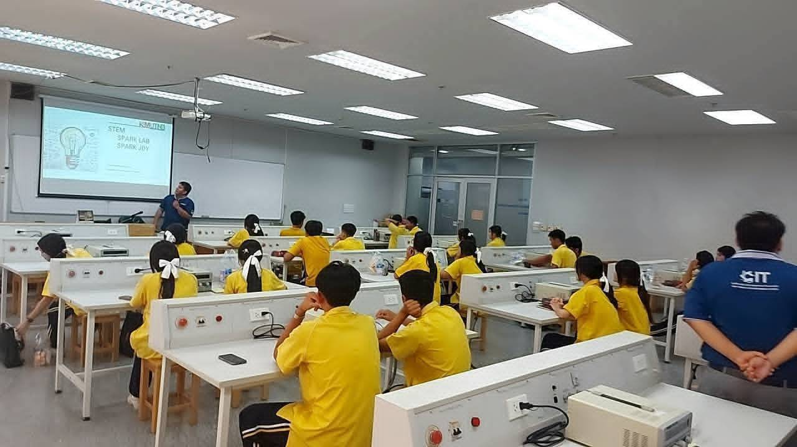
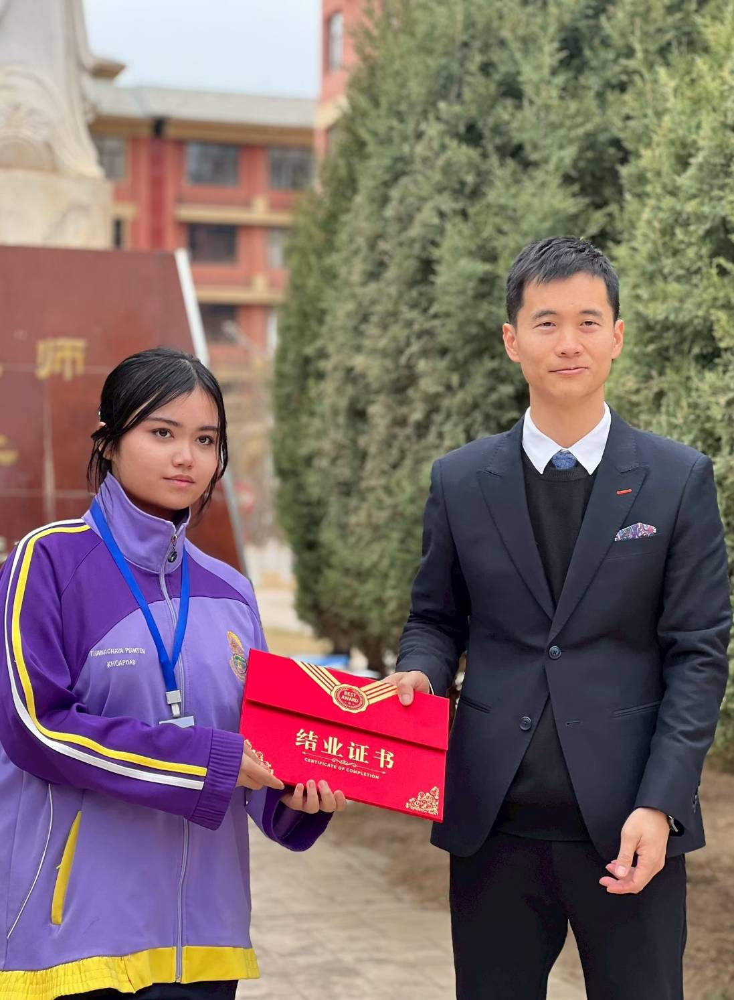
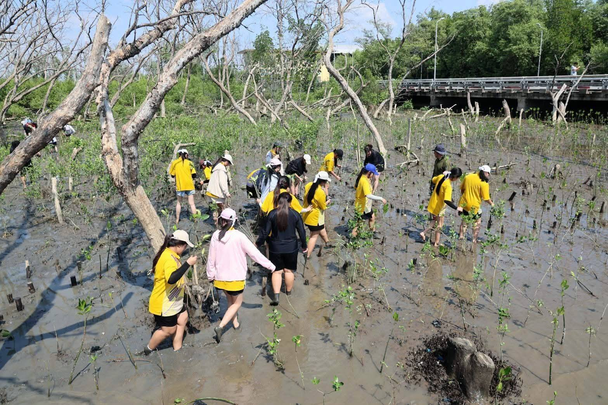

KMUTNB. STEM Camp I gained hands-on STEM and coding skills by solving real-world challenges. I learned Design Thinking, explored and experimented with various engineering fields, worked on innovative projects in KMUTNB's labs, and received a certificate to prove my technical abilities and readiness for a future career in technology.

CHINESE Exchange program I was selected to participate in an exchange program at Lanzhou Country Garden School in Lanzhou, Gansu Province, China. The selection was based on a competitive camp evaluation focusing on language proficiency and social skills. For this achievement, I was awarded a fully funded Type I scholarship. During the exchange, I deeply immersed myself in Chinese culture. Academically, I engaged in hands-on classes and activities with local students, gaining valuable knowledge in programming and cutting-edge innovations.

plant mangrove trees at the Bangpu Nature Education Center I participated in a volunteer environmental project to plant mangrove trees at the Bangpu Nature Education Center, located on Sukhumvit Road, Bang Pu Mai Subdistrict, Mueang District, Samut Prakan Province. This activity helps restore the coastal ecosystem, creates an essential nursery ground for marine life, conserves nature, and returns trees back to the forest.